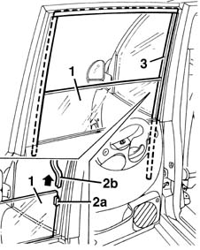

7010D18 rear side door descending window glass channel r r
- Path
- Procedures > 70 FITTINGS > 7010 PASSENGER COMPARTMENT REAR SIDE DOORS > 7010D rear side door window glasses > 7010D18 rear side door descending window glass channel r r
- Kind
- repair procedure (removal / refitting; the operation number is the code)
- Applies to
- all engines; all production periods
- Interactive page
- https://sloeber94.github.io/elrnDB-fMltpl/en/#/2892087
Applies to: all engines; all production periods
 Removing
Removing
 Refitting
Refitting7010D26 rear side descending window glass scraper (outer) r r
1. Lower the window almost completely.
2. Disengage the window's fixing piece (2a) at the front (2b) of the run channel, removing and lifting the channel.
3. Remove the whole of the window channel.

Applies to: all engines; all production periods
Refitting
RemovingCheck that the run channel is not damaged.
Fit the window channel starting from the rear, then engage the window's fixing element in the front run channel and slide the window upwards.
Check that the window works properly.
7010D26 rear side descending window glass scraper (outer) r r